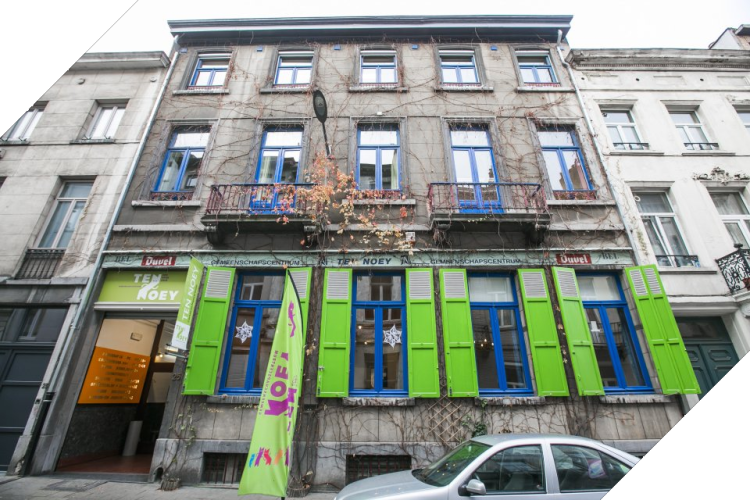
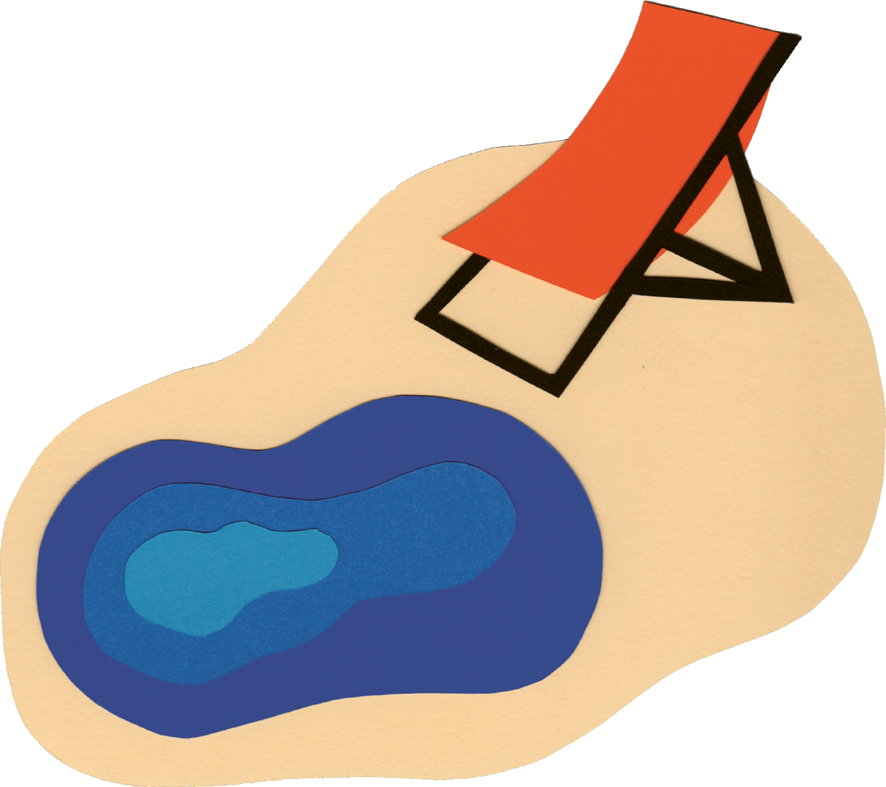
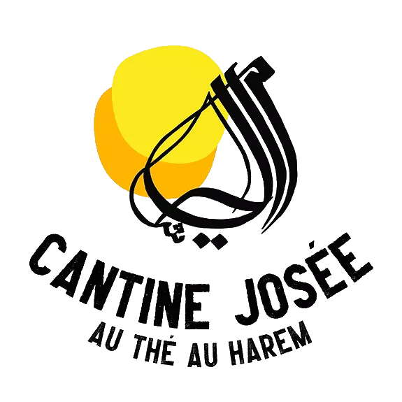
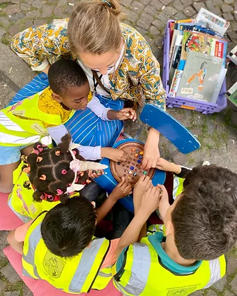
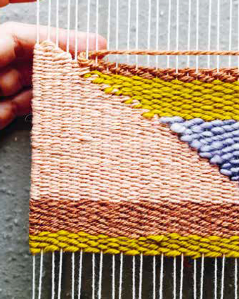
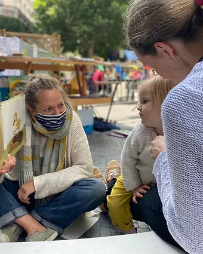
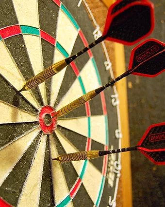

Camping
Josée
Brussel


Zomerproject
Tijdens de zomer trekt Ten Noey resoluut naar buiten, op straat, op pleinen en in parken. We sparen moeite noch tijd (maar zijn wel zuinig op onze centen) om een zomerwerking op poten te zetten waarbij enerzijds de rijkdom van Sint-Joost-ten-Node aan het licht komt.
Meer info

Cantine Josée
Josée heeft het zo naar haar zin in Sint-Joost dat ze nu ook een winterversie van haar camping opent: Cantine Josée, een open ontmoetingsplek waar alles kan en weinig moet, een plek voor open activiteiten, maar ook een hangplek, een plek waar iedereen gewoon mag zijn en zitten, zonder meer.
Meer info

WOENSDAGEN
Op woensdag staan kinderen en gezinnen centraal. We kijken, spelen, knutselen en ontdekken.

DONDERDAGEN
Donderdagen worden maakdagen. Weven, handen in de klei, naaien, tekenen. 's Avonds gaan we in debat over thema's die ons bezig houden.

VRIJDAGEN
Op vrijdag staan jullie zelf aan de potten. We serveren volkskeuken en 's avonds vullen we het podium, met muziek, woord enz.

ZATERDAGEN
De zaterdagen staan in het teken van verhalen, van (voor)lezen en luisteren, voor jong en oud.

ZONDAGEN
Op zondagen gaan we voor gezelligheid, met spelletjes en een stuk taart.